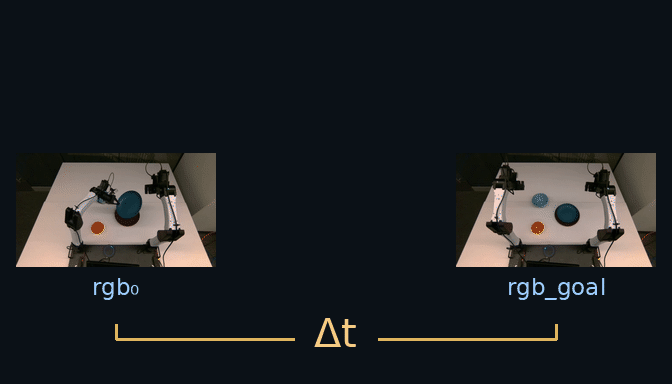
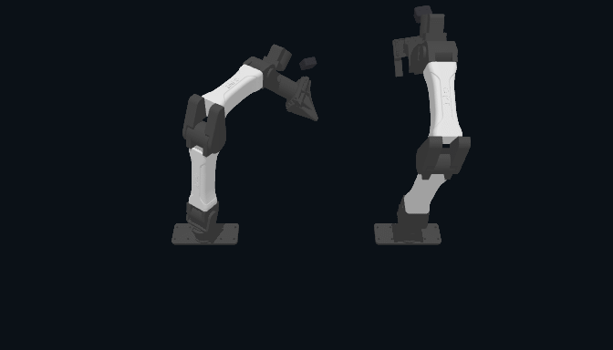
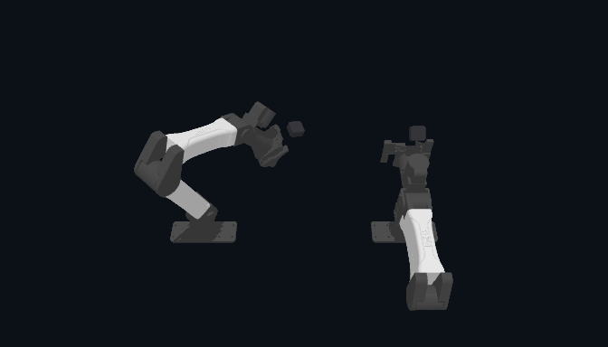

01 / Introduction
Humans can imagine different courses of action, anticipate their consequences, and choose how to act to achieve their goals. Robots with general intelligence need to answer the same questions: What should I do next? What will happen if I do it? Am I making progress towards my goal?
Current robotic systems often distribute these capabilities across separate models, each with its own architecture, training data, and objective. Post training a vision-language or video model to robot control can also introduce a substantial change in its training distribution, particularly when broad pretraining data gives way to a much narrower set of robot demonstrations.
We take a different approach to robot foundation model training by treating policy inference, simulation, and progress tracking as different queries to a single model, trained continuously using a diverse distribution of visuomotor data. Building on Probabilistic Structure Integration (PSI), we model relationships between visual observations and actions using next-token prediction, reframing robotics tasks as a set of sequence design problems.
At inference time, we observe striking generalization beyond the training distribution, where the model flexibly manipulates unfamiliar objects, simulates counterfactuals given a set of actions, and measures its own progress.
02 / Different prompts, different missing pieces
Writing outline
- Start with the shared data. A robot trajectory links observations, actions, and time. Introduce the idea that each task provides some of these pieces and asks the model to fill in the rest.
- Policy — fill in the actions. Given the current observation and a goal with its time horizon, predict the actions that connect them.
- Simulation — fill in the future observations. Given the visual history and an action sequence, predict what the robot will see next.
- Progress — fill in the time difference. Given the current observation and a goal image, predict Δt: the estimated time remaining to reach the goal.
- Bring the three together. Emphasize that the same model answers each query by changing which pieces are supplied and which are predicted. Connect this idea to the sequence design examples below.

01 Progress tracking



02 Policy

03 Simulation



03 / Model
Our base vision model, PSI0.5, uses a GPT-style autoregressive transformer architecture trained on next-token prediction across the following modalities: RGB, depth, optical flow, and camera pose. We extend this framework to robot learning by adding actions as another modality in the training mix. We refer to this variant of the model as PsiBorg.
04 / Data & training
Unlike current VLAs that post-train a VLM backbone on actions, we continuously train our base vision model using a diverse mixture of video and robot data. Specifically, our training data falls into three groups:
General visual data: Diverse internet videos and vision datasets used to train the base model, including human activity and egocentric video.
Robot videos: Open-source datasets spanning different robot embodiments and tasks. These broaden the model’s exposure to robot motion, object interactions, and task structure.
Paired observations and actions: YAM data from ABC, World Engine, Molmo, and diverse manipulation tasks collected on our own bimanual YAM setup. These datasets connect visual observations to actions in the YAM embodiment.
General visual data

Robot videos

Paired observations + actions

Sequence design
Progress tracking: Given a current observation and a goal image, the model predicts a time difference, Δt , describing their temporal separation. This estimate provides a way to track progress toward the goal as the robot receives new observations.
Policy inference: During training, the model learns to predict demonstrated action sequences from the current observation and a visual goal. At inference time, the model first predicts how far it is from a visual goal. This temporal information is then embedded into the goal image before action prediction.
Simulation: The model learns to predict the next visual observation autoregressively using one fixed initial ground-truth observation, its own rolling history, and the next action chunk.
05 / Results
In this blog post we show qualitative results from our model for the capabilities described above.
1. Policy and progress
We observe striking generalization to new visual goals and objects. We also find that predicting time to goal first, and adding this temporal embedding to the goal image greatly improves action prediction compared with providing just the goal image, where the model may be forced into pixel matching. This visual goal conditioning can be thought of as a form of in-context learning from human demonstrations, where the demonstration is a goal image instead of a video.
2. Failure detection
Can the model distinguish reaching a goal from simply reaching the end of a video? We build an ABC simulation benchmark from six held-out successful episodes of turning mugs right side up. At 50%, 70%, or 90% of each episode, we simulate failures by branching into continuations that hold the robot in place or apply bounded random joint movements.
Every continuation is evaluated against the same successful source goal, and the simulator labels its outcome as successful or incomplete.
ABC simulation benchmark
Loading benchmark…
3. Simulation
Can the model imagine the consequences of its own actions? Below, we show simulation results for a set of held-out teleoperated episodes. We see that the model successfully simulates picking up and dropping off objects, and can simulate counterfactual scenarios.
Recorded expert joint commands replayed in MuJoCo alongside action-conditioned RGB predictions. Both views advance in 400 ms steps.
Loading simulation…